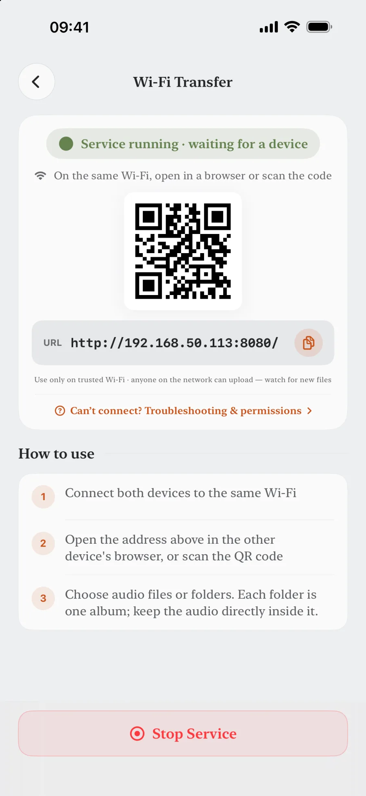

EarMemo › Old-time radio offline
How to listen to old-time radio shows offline on iPhone
Old Time Radio Researchers (OTRR) sets are free on the Internet Archive. On a show's Single Episodes item, open DOWNLOAD OPTIONS → VBR MP3, then touch and hold an episode and choose Download Linked File. For a whole series, download the ZIP on a computer, unpack it, and send the folder to your player over Wi-Fi.
OTRR is a volunteer group that collects, sorts and labels old radio broadcasts — comedies, westerns, detective serials — and publishes them as sets on the Internet Archive, in the Old Time Radio Researchers collection. Two kinds of item matter here: Single Episodes items, with one MP3 per episode, and Certified sets, which come as large ZIPs (often several of about 700 MB each) and no per-episode MP3 list.
Download episodes on the iPhone
- Find the show on archive.org: search for the title plus OTRR Singles, or browse the Old Time Radio Researchers collection. Pick a Single Episodes item; a certified set only has ZIPs.
- Open DOWNLOAD OPTIONS on the item page and tap VBR MP3. It lists one file per episode.
- Save the episodes you want. Touch and hold an episode and choose Download Linked File. It goes to Files → Downloads.
A whole series: use a computer
A certified set's ZIPs are too big to handle comfortably on a phone. Download them on a computer, unzip them into one folder per series, and send the folder to EarMemo over Wi-Fi. OTRR file names typically start with the show name, date and episode number, so a folder sorts in broadcast order.
Import the files into EarMemo
- From Files. In EarMemo, tap ⋯ → Import Audio / Video, open Downloads, and select the files (tap Select to pick several). Choose Import Folder instead when you have a whole folder. A folder of episodes becomes one album, in file-name order.
- Or from a computer over Wi-Fi. For a big batch, download on the computer, then in EarMemo tap ⋯ → Wi-Fi Transfer, open the address it shows in any desktop browser on the same network, and drag the folder onto the page. The transfer stays on your local network. All four transfer routes.

Listen: speed, resume, and marks from your headphones
- Speed from 0.5× to 3.5×, pitch kept, for half-hour episodes.
- It remembers the exact second in every file, so you can leave one file, play another, and come back to where you stopped.
- Mark a moment without touching the phone. In Settings → Headphone Controls, set Next to Bookmark Here. On AirPods Pro, press twice; a short chime confirms the mark. Add a sentence later, and tap the mark to hear that passage again.
- A sleep timer with a countdown on the Lock Screen, for listening in bed.

Licensing
OTRR items on the Internet Archive carry Creative Commons Attribution-NonCommercial-NoDerivs licenses (the version varies by item). Downloading for your own listening is what they are there for.
Official pages used for this guide
When EarMemo is the wrong choice
- You want a 24-hour old-time radio stream. Internet radio stations do that; EarMemo plays files you have.
- You want hundreds of episodes free. The free version lets you try 10 different tracks in total; a full series needs EarMemo Pro (one-time purchase).
- You want to browse the archive inside the app. EarMemo has no catalog; you download on archive.org and import.
Questions people actually ask
Where can I download OTRR old-time radio shows?
On the Internet Archive (archive.org), in the Old Time Radio Researchers collection. On a Single Episodes item, DOWNLOAD OPTIONS → VBR MP3 gives one file per episode; certified sets come as large ZIPs.
How do I download one episode on iPhone?
Open the show's Single Episodes item, tap VBR MP3 under DOWNLOAD OPTIONS, then touch and hold the episode and choose Download Linked File. Tapping it only plays it.
What do I do with a big OTRR ZIP?
Download it on a computer, unzip it, and transfer the folder with EarMemo's Wi-Fi Transfer. On an iPhone, tapping a zip in the Files app also unpacks it, but sets of several hundred MB per ZIP are slow there.
Are OTRR recordings free?
Yes. They are published free on the Internet Archive under Creative Commons non-commercial licenses.
Is EarMemo free for this?
Free to download, and the free allowance never expires: you can listen to one album at a time, try 10 different audio tracks in total, add unlimited timestamp markers, and write text on 5 of them. Importing, resume, speed and the sleep timer are free. A long series needs EarMemo Pro, a single one-time purchase with no subscription.
Try it with your own files
EarMemo is free to download and free to keep using within its quota. EarMemo Pro is a single one-time purchase — no subscription, no ads, no account.